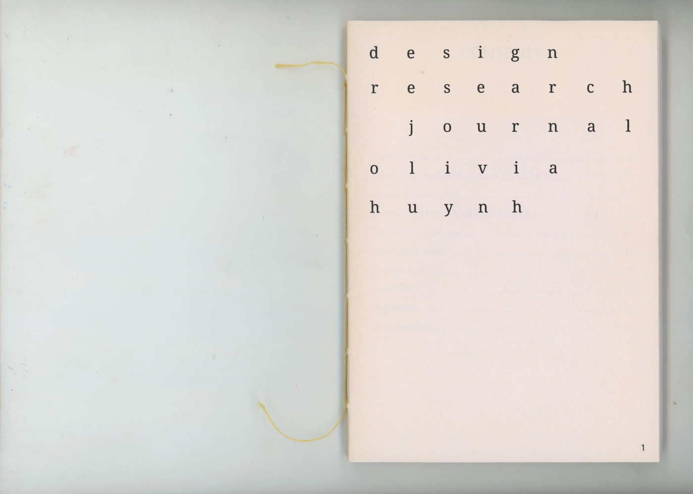
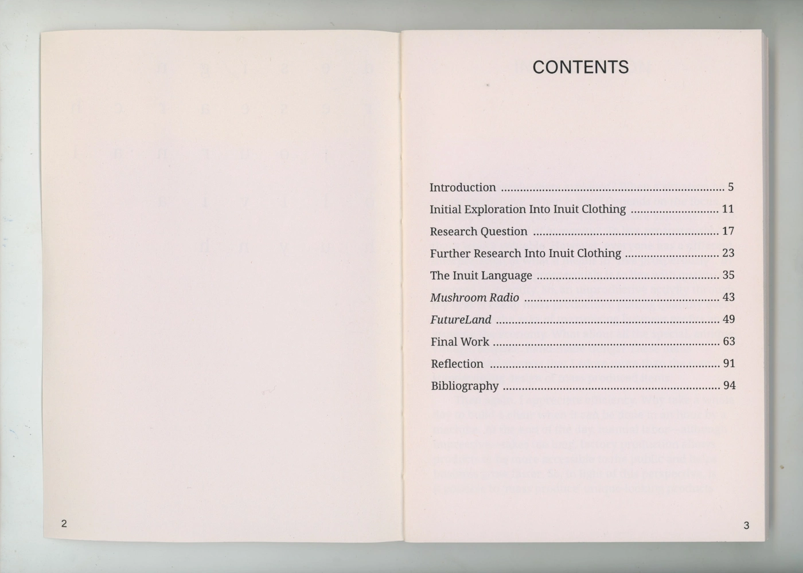
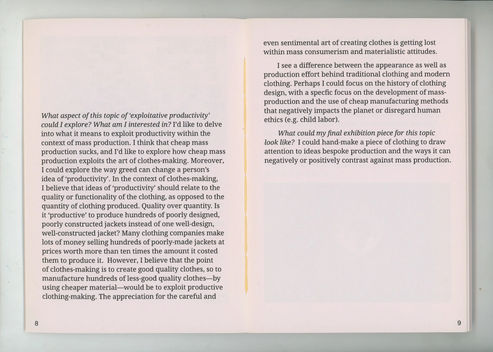
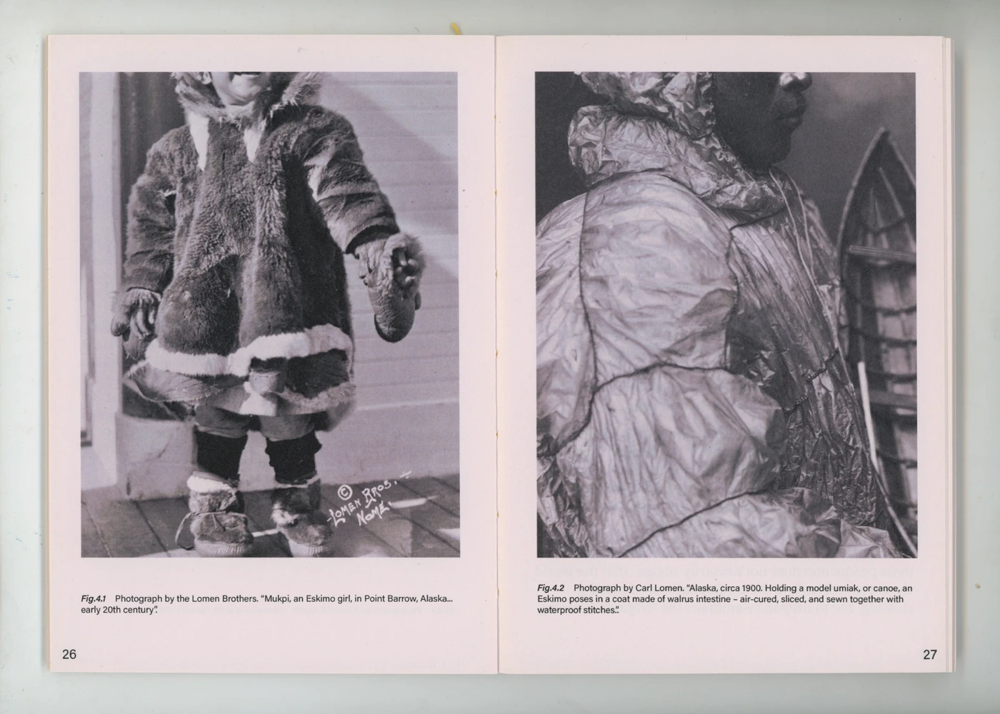
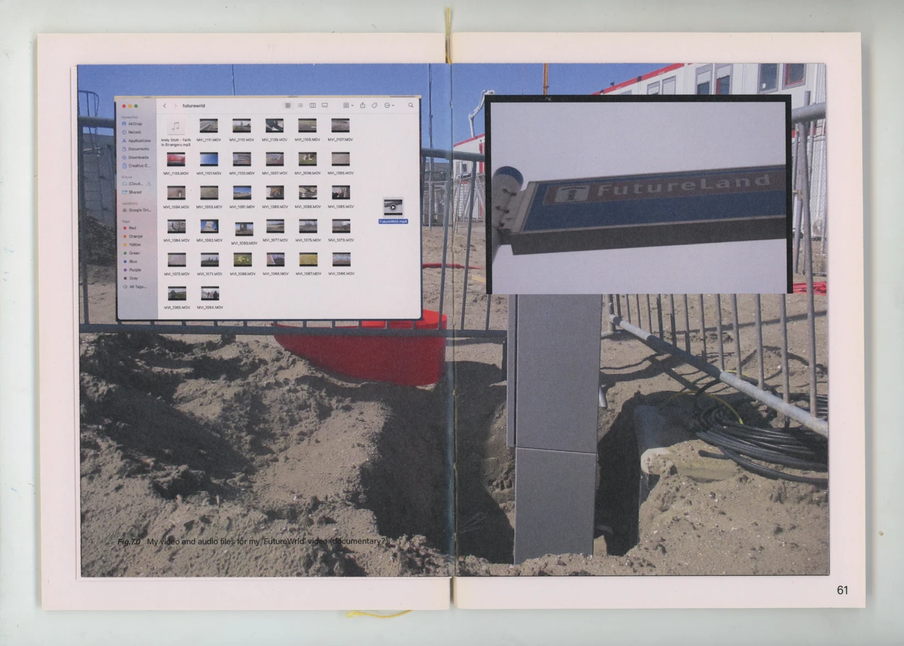
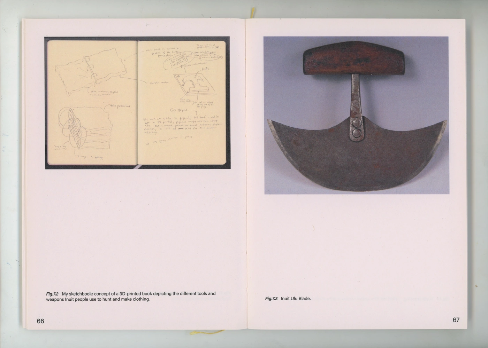
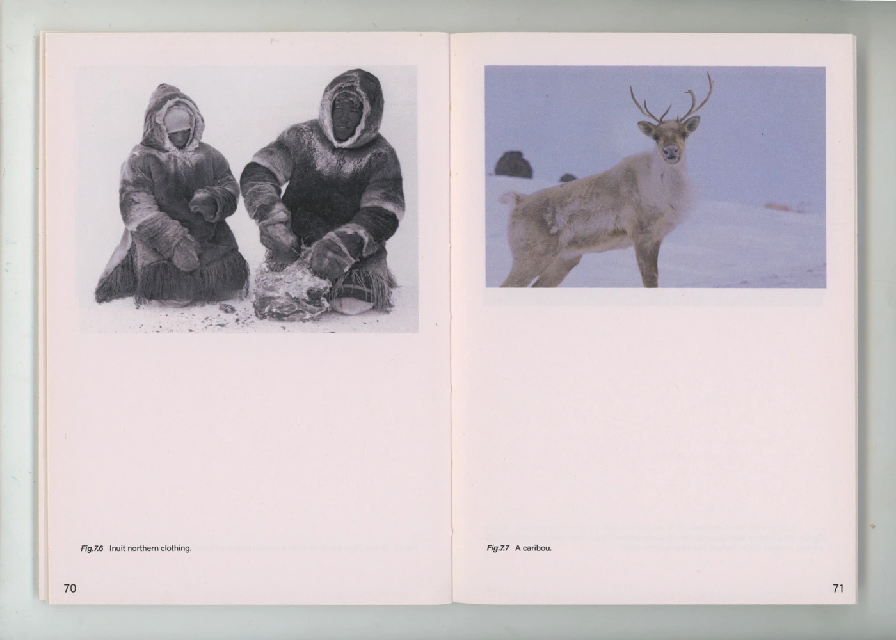
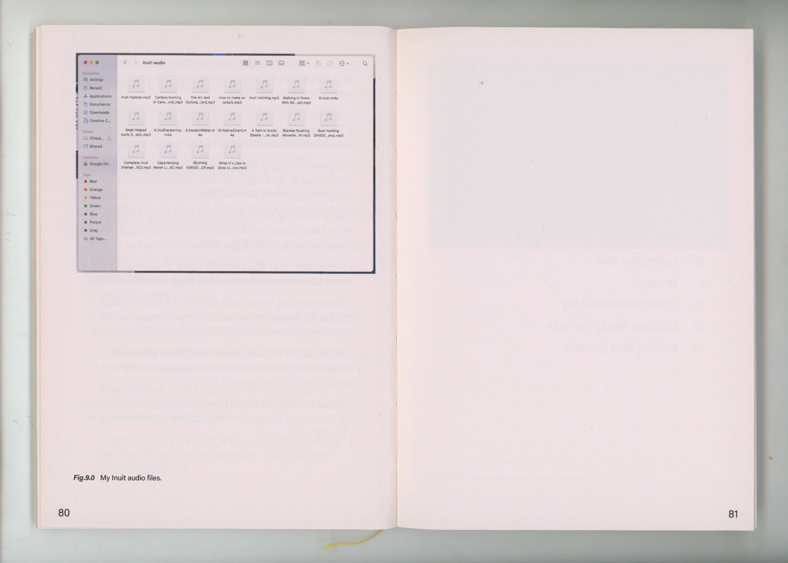
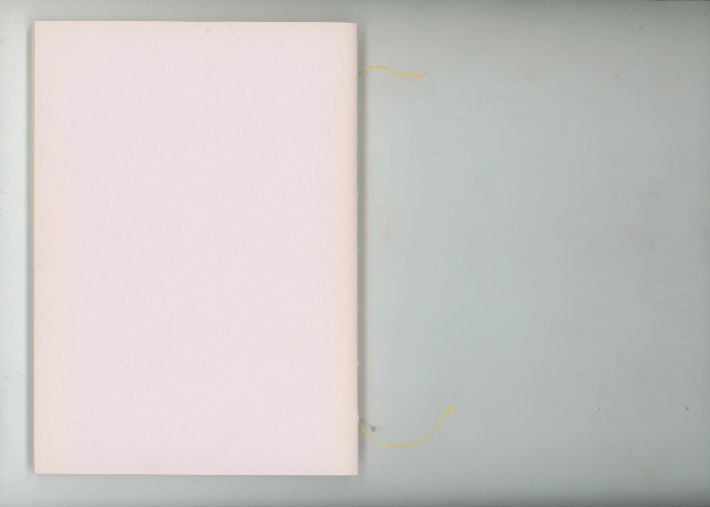
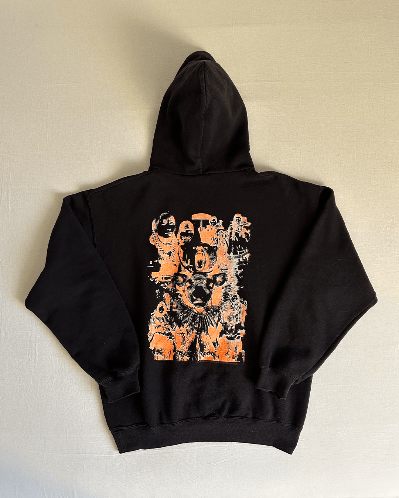
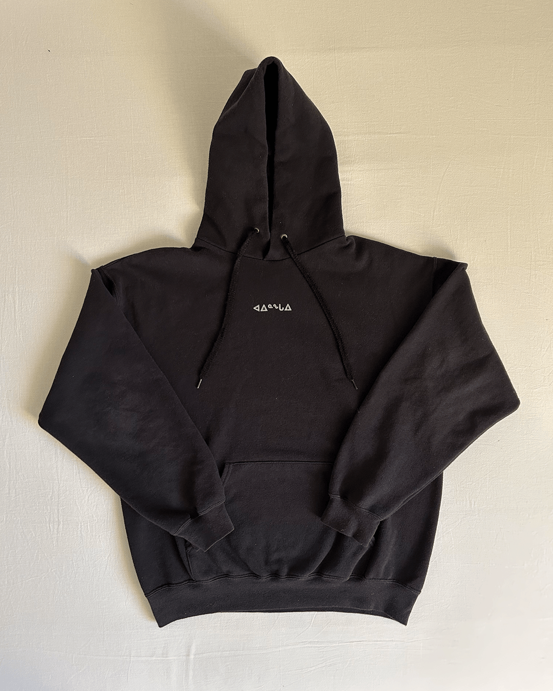
ᑐᙵᓱ, meaning 'welcome' in Inuktitut, is a two-part soundscape which explores the
contrast
between traditional and mainstream clothing through sonic mediums, highlighting the ways in
which
our modern economy exploits and neglects that art of fashion in the name of productivity.
This soundscape was aired on Mushroom Radio on the 17th of May at the Royal Academy of
Art in The Hague.
Accompanying posters and custom apparel depict a visual exploration into the style and
ancient
technique behind the making and wearing of native Inuit garments. (1) Untitled, A2
laserprint.
(2) ᑕᑯᓇᓵᕐᓇᑯᓂ (Long time no see), A2 laserprint and silkscreen print hoodie.
Listen on SoundCloud:
oolive huynh ·
ᑐᙵᓱ (Welcome)
Sound Performance · Publication · Poster · Apparel
Duration: 8:33min
95 pages | 135 × 190 mm | English
The Hague, May 2024